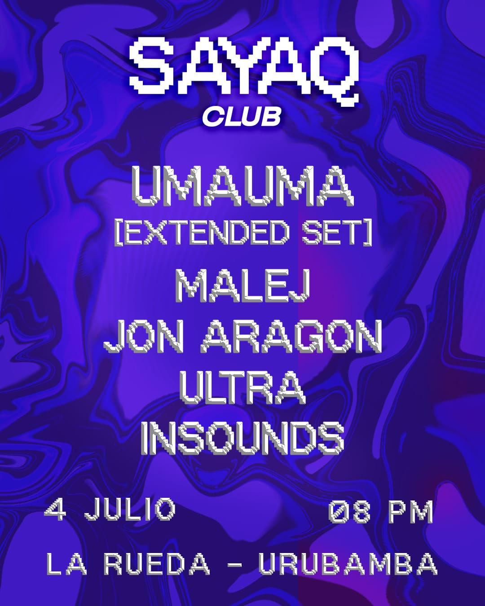

SAYAQ
fecha: 04/07/26 hora: 8pm
lugar: La Rueda Restobar,
Av. Mariscal Castilla 645, Urubamba, Valle Sagrado de los Incas


ANTES DE NUEVOS CAMINOS, HAY LUGARES A LOS QUE SIEMPRE SE VUELVE.
Durante años, @umaumamusic ha formado parte de la historia musical del Valle Sagrado. Ha compartido escenarios, encuentros y momentos que ayudaron a construir una escena que hoy sigue creciendo.
Este 4 de julio regresa para una noche especial junto a su comunidad antes de su viaje a Europa.
Será su única presentación en el Valle del año.
Y una ocasión única para escucharlo en un formato especial:
UMA UMA
[EXTENDED SET]
Acompañan:
@malej___
@jonaragoncuscodj
@djultracusco
@insounds16
📍 La Rueda — Urubamba
🗓 4 de julio
🕗 Desde las 8:00 PM
🎟 Preventa: S/25
🎟 Puerta: S/40
🍾 Solo 3 boxes disponibles.
Entradas por DM y WhatsApp.
🔥Fecha exclusiva para Sayaq Club 🔥
LINE-UP:
Umauma ext set
Malej
Jon Aragon
Ultra
Insounds